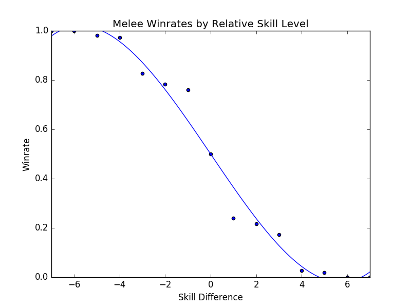

Making Sense of Melee: The Illusion of Objective Ranks and the Real Impact of Everything
Draft: v1.0 | Posted: 1/9/2018 | Updated: 1/28/2018 | confidence of success: 85% | estimated time to completion: 1/15/2018 | importance: High
A while has passed since I did my project predicting tournament matches at Super Smash Brothers tournaments with Machine Learning. Since then, I've gotten involved with the Melee Stats group, and eventually decided it would be appropriate to revisit this project on a somewhat larger scale - a more technically ambitious version of the last one, with more data, better visualization, and substantially more practical application.
To do this, I assembled a relatively small database of roughly 22,000 tournament set results between players in 2017. Looking at tournament results is a bit of a hot topic lately, after SSBMrank 2017, so with this modest amount of information we can explore a bit about how Melee works and about how looking at tournament results might prove valuable.
"Why don't you just use ELO?"
I was interviewed briefly for ESPN esports about the inner workings of Melee Stats, and by far the most frequent criticism that our group received was "why don't you just use an objective system to do ranks?"
The short answer to this is "well, we've tried, and it doesn't work well." The long answer is that most of these Rating algorithms are not well-suited either for melee or for double-elimination formats. For example, here is ELO run on the database
And here is the top 10 with Glicko-2 run on the database
I played chess in tournaments for several years before playing melee, and I also frequently thought about how nice it would be if there were some publicly available, widely-implemented ratings system in melee. However, there's three basic roadblocks to allowing these systems from working well: match disparity, Claude Bloodgood syndrome, and win appraisal.
Match Disparity
Something people often neglect when making the suggestion to use ELO is that ELO functions by predicting the number of wins and losses you will have across a tournament given how many matches you play, a number which is a constant in Swiss format and a variable in Double Elimination. Below is the update function for ELO, which in plain english is "your rating is adjusted by the difference between your actual and expected scores, multiplied by a constant K"
Double elimination inherently requires more matches played in losers, so not only do all the players have different number of matches, but even two players playing in the same round of losers usually have played a different number of matches to reach that spot. Not only that, but every player will have the same number of set losses every tournament except for the single winner of the tournament. So, imagine a local tournament featuring Mang0. We may predict that he ought to come out of this tournament with five wins and no losses. If he loses round 1 and plays ten sets in losers to win the tournament, this is obviously a horrendous performance for Mang0 but a wildly rewarded one using ELO (10 > 5). You can try retroactively predicting the number of points you ought to win given how many you played, but this also punishes players that win through winners and therefore play fewer matches - a 2000-rated player winning 3 points out of 5 against a [100, 2200, 2200, 2200, 2200] bracket is worth the same to ELO regardless of whether you beat the 100 or lost to them; in double elimination, losing to a 100-rated player R1 might net a 2000-rated player a longer but not much more difficult bracket run, something like [100, 1500, 1800, 1800, 2000, 2200, 2200, 2200], thereby rewarding the player slightly more for losing to the 100-rated player compared to losing to the 2200 player. You can also try predicting it match by match and use percent chance to win (which is what online chess clubs like ICC use), but this leaves a lot to be desired in practice and also simply misses the point entirely: ELO is structured around players having a roughly equal number of games each tournament, and double elimination means that placements and number of matches played are always different. ELO, and it's commonly used variants like Glicko-2 or trueskill simply aren't well-suited for the format used in Melee tournaments.
Claude Bloodgood
Claude Bloodgood is my favorite chess player, mostly because of how messed up of a human being he was. Bloodgood was a strong amateur chess player that was sentenced to death in the late 60s after murdering his mother, although his sentence was later changed to life in prison after the death penalty was ruled unconstitutional at the time in 1972. In prison, Bloodgood played thousands of rated games against other prison inmates, all of whom were awful, and won so many games that his rating inflated to 2759, making him the 2nd highest rated player in country (Bobby Fischer, for comparison, retired at 2760). He eventually qualified for the US Chess Championship due to being one of the top 16 rated players, which made the US Chess Federation ultimately reconsider a lot of their rules with regards to how ratings functioned. There's so many things about Claude Bloodgood that warrant their own post (his opening of choice, the Grob Attack, of which he wrote a book on; his self-proclamation of being a Nazi spy during the war; his attempt to break out of prison after overpowering a guard at a chess tournament - the list is unending), but I'll leave them for another time, or perhaps encourage Jon Bois to do a video on him.
For our purposes, Bloodgood serves as a great example of "closed pool" rating abuse. You get inflated ratings by being the best player in your playerpool, even if your playerpool is a relatively weak one. Since so many regions in melee have players that don't travel and simply beat up everyone in their region (Stango, Hanky Panky, Rudolph), its absurdly difficult to compare them in this way (just think of how different #5 in FL is from #5 in TN).
Win Appraisal
In chess, go, and other frequently-elo-measured games, every player has a relatively static skill level against every other player. There aren't really "King's Gambit Mains" that have a tough time against "Pirc Defense Mains". A win against an 1800 rated player is worth the same amount of points to one 1200 player as they are to another 1200 player. However, the existence of multiple characters in melee means that every win isn't necessarily created equal - wins as peach against puff players are inherently more valuable than wins as fox against puff players, and so on. ELO is structured around the idea of all matches being worth the same amount, and thus misses the nuance when, say, lloD beats Prince Abu, a player ranked lower than him.
This is the weakest point, of course, since this is a highly debatable assertion and it's not always clear which matches are valuable since everybody's matchup chart is a little different. Usually people agree on the big imbalances (most people agree that peach loses to jigglypuff) but even at top level certain matchups are assessed wildly differently.
Objectivity
I do not believe in objectivity in rankings.
This is not to say I think being objective with regards to rankings is impossible, nor do I think "objective" tools serve no purpose (the tools I've written have already proven highly useful in generating baselines for seeding tournaments). No, more specifically I want to stress that "objective" ranking systems are much less objective than they actually seem, and the word "algorithmic" or "empirical" might be better.
It frustrates me to see people in the smash community treat measures like elo as "the truth" because they "don't have any human input". This simply factually incorrect - these so-called objective measures have as much human input as anything else, codified into the constants and design choices of their algorithms. Designing these things is as much an art as it is a science, and the choice on how to weigh placements, upsets, losses, consistency, peaks, and the like are all just that - choices, made by a human sitting in a chair with Sublime Text 3 open.
For instance - PracticalTAS has one of the more prominent, visible ranking algorithms (the output of which was submitted this year as a ballot for SSBMrank 2017). Unlike most similar algorithms, this ranking incorporates placings instead of just head-to-head. However, unlike head-to-head data, placings are highly a function of seeding, which is performed by humans. Imagine two players, the same skill level, that both place 49th at the same tournament. By definition, the player with a higher seed will have had an easier bracket to reach that placement (on average), meaning that incorporating placement disproportionately rewards players with higher seeds. This isn't necessarily a bad thing, and indeed would loosely incorporate the seeding data into the rankings, "improving" them to be more like the seeding (assuming you generally agree with the seeding). The point here is that it ultimately boils back to human input, obfuscated by lines of code and decisions made before any numbers are ever crunched.
I think it would be much, much healthier if the community discarded this misconception of "true objectivity" altogether, because I can envision a future in which community members treat the algorithmic ranking overlord as something out of Psycho Pass.
"Well, I didn't think Crush was the tenth best player in the world, but I am a human and the algorithm is free from bias, so I am the one who is wrong"
That said, data visualization is fun and being able to accurately synthesize all of the available information in a coherent way is valuable; keeping this in mind, we proceed.
Getting Data
I scraped data off of smash.gg using only NTSC brackets from 2017 that were listed in When's Melee?. I used BeautifulSoup4 instead of just using their API, not because it was easier but because I had most of the code written already.
Most of this process was automated, as smash.gg occasionally has character data that was pretty straightforward to infer people's mains and backwards-assign then to all their matches. Sacrificing some accuracy, we can also guess for the most part which character players choose against which characters, which was a huge problem with the 2015 version of this project - my old results listed peach puff as roughly 50-50 since armada and hungrybox had so many sets together, even though armada played fox in almost all of those matches. There might be errors in the inference, especially among players that select characters against specific players rather than characters, but broadly speaking it's a lot more accurate this way.
Database Design
Like before, I put this data into a sqlite3 database.
There's a number of ways you could go about doing this, depending on the goals you had in mind with what you will ultimately be doing with this data.
What I settled on for this was a set of three tables, with the following information in them:
Players
| Tag | Character | Skill-level |
|---|---|---|
| lint | Falco | 1 |
Matches
| winner | WCharacteer | loser | LCharacter | wins | losses | Event |
|---|---|---|---|---|---|---|
| lint | Falco | Captain Smuckers | Falcon | 3 | 2 | Smash Corner 77 |
Tournaments
| Event | Date |
|---|---|
| Smash Corner 77 | 20180103 |
I can get most of the data I want this way by using joins between tables, and it's fairly suitable for what I am doing - if I was doing this long-term for production (i.e. building something in which I could track people's skill level over time) then I would probably add a WSkill and LSkill column, so that I could have access to the skill level of a player at any given event. This is beyond the scope of my project currently (especially considering the fact that I only collected data from 2017, not a terribly long amount of time for players to make big moves in skill)
Tiering Players At Every Level
Melee Stats Seeding
Melee Stats, spearheaded by Dingus, is frequently recruited to provide input on seeding for national tournaments. The way seeding gets done is that players get placed into broad tiers, and then those tiers are then fed into pools, attempting to avoid region conflicts or repeat matches from recent tournaments. Visualizing each tier's winrate against across all the tiers is a little messy...
...but if we plot winrate in a third dimension it yields this very pretty gradient:

The seeding tiers are remarkably consistent, even at the lower levels (mostly thanks to Algebra and Dingus' insanely wide knowledge of the game's mid-level playerbase).
So it's fairly clear that this group has a very consistent track record for accurately placing players at their appropriate skill level. Furthermore, this group has a bunch of private spreadsheets containing their work comparing players to other players, which is trivial to import into our database. We can leverage this by using MS tiers as a training set and see if we can't figure out a way to auto-tag players' skill levels based on their set history.
Auto-Tiering with Machine Learning
So, for our purposes, we'd like a way to tier every relevant player in such a way that this general structure is preserved. This is a classic classification problem, and if we assign all of the attendees of a recent tournament (The Big House 7) to the tiers given to them by Melee Stats, we can generate a sizable training set.
As a demo, let's try to classify every player that has any games against any player with a tier. I ran this tiering twice, once straight through and once several times tier by tier (so that wins against unclassified high tier players isn't ignored for low level players, providing more data), yielding the following results, respectively:


The gradient is substantially worse, but it's still there - this is a decent starting point.
Here's the same code run on only players with more than five won matches against players with tiers lower than nine. This should return a graph with a less noisy gradient, while only sacrificing the lower level data with fewer results to account for them.
And indeed, it tiers a number of players, bringing us up to 5799 matches between them while maintaining the gradient. This is a pretty solid result, and we can use this to examine some interesting trends in the data.
Just as a brief aside - before anyone suggests that this be used without human curation, the automatic tiering contained some serious misses likely due to sandbagging at locals (Null, for example, was originally listed as the highest possible tier). I'm confident this would be useful in a well-maintained regionals+ dataset (or tafostats) but for the mishmash of locals+ in this dataset it was certainly more of a broad prototype rather than a production-ready autoseeder.
Representation
As mentioned in the previous version of this project, I view character representation as essentially meaningless - a claim that I think aged well with Hungrybox's rise to world #1. Fox is not inherently better because he is played more often, and Puff is not inherently worse because she is relatively more rare. These things may have correlations (you might argue that puff is weak but gets inflated results because of her rarity, or that fox's popularity is tied to the belief that he is the best character) but correlation does not equal causation, and I continue to be confident that this metric is not useful for this type of discussion.
Like last time, it would be fun to look at how common certain characters are, both by character mains and by matches appeared in. That is to say, what is the percentage chance you will see an X main given a randomly selected player and a randomly selected match.


Unlike last time, its more difficult to make conclusions about this figure compared to the 2015 version of this project due to the inclusion of locals instead of merely nationals. So while the player representation remains largely the same, the matches metric is less representative of performance and more representative of overall activity - Samus is quite a bit above Luigi by match count despite being lower by player usage, but it's unclear if that's because Samus players are getting farther at every tournament or if it's because they are simply more active locally.
Not much to do see, but cool to look at.
Blowouts
With a more ambitious data capture (per-match character and game-win data), we can also get some cool data about how often best-of-threes go to game 3 and best-of-fives go to game 4/5. Excluding all the unmarked sets (labeled as 1-0), we get the following:
As you might expect, 2-0s dominate this list - most players are going 0-2 or 1-2 at any given tournament, and most of these are unseeded players running into seeded players, making closer best of threes relatively rare. A little over 3/4 of all sets played are best-of-three, rather than best of five.
If we only look at players with seeds, then we get the following.
A much more even spread. I was somewhat surprised at how much more represented best-of-five is when removing players that don't receive seeds. A little more than half of the sets played between tiered players are best-of-five, meaning they're happening somewhat later in brackets. Also noteworthy is how relatively even the gamecounts are - I expected 3-0 and 2-0 to dominate the distribution, but a bit over 27% of all best-of-fives go all the way to game five, with only around 38% being 3-0 sweeps.
More interestingly, we can filter by certain matchups, which almost feels like we're approaching mostly-useless sports stats territory. Sheik mains, for example, often complain that Fox has two "auto-win" stages vs her (Stadium and Final Destination). While this database doesn't have stage data (way, way too hard to automate) if we assume that Fox mains always take Sheik to these stages in best of fives we can observe the relative truthness of this - let's look at the win distributions between fox and sheik players based on game count, and trim the data four times: overall (more data, likely conflating skill level info if one group is consistently higher than the other), seeded players (removes relatively noisy low-level data), closely tiered players (less data, more accurate to relatively equal skill levels), and the top tier (least data, most representative of top level).
It looks 6-4 at first glance, which squares up with conventional wisdom.
Surprisingly, Sheik does better in game 5 scenarios compared to any other gamecount, bringing the last game up to almost 50-50. I wish it were possible to look at how many of these game 5's were ones where Sheik won the neutral stage vs where Fox won the neutral stage, since the former means game 5 is played on FD/PS and the latter means game 5 is played elsewhere. While this is better data than the last chart, you could certainly make the argument that on average fox players are simply better / worse than sheik players, which would skew the data. To counteract this, let's filter the data we use to players that are tiered roughly equally.
Kind of amusing to look at this, and see the gamecounts hover relatively close to 50-50 (Fox's win percentage overall under this criteria is 54%). To draw any big conclusions from this would probably be too ambitious, but so far there doesn't seem to be much evidence in practice that gamecount makes an enormous impact on the outcome of a set in this matchup.
The exact equality of game 5 in this example I find to be particularly striking.
Something of note, though, is that the three most prominent sheiks (Mew2King, Plup, Shroomed) all have been known to switch characters vs fox mid-set. This means counting all their sheik-played sets, as I have done above, would theoretically buff sheik's numbers since her losing stages are covered by secondaries by the three most powerful sheiks.
Excluding them for completeness' sake we get the following
As you might've expected, this greatly reduces the number of 3-0s performed by sheik players and raises the fox win percentage to around 57%. Funnily enough this ended up not touching the 3-2 sets at all (that is, those three players put together won and lost an equal number of game 5 sets against similarly skilled players).
Overall examining gamecounts was a fun trip down the data with relatively inconclusive results about the existence of an extreme stagelist swing in this matchup. Someone with actual per-match stage data could probably do something even more accurate, and hopefully that eventually becomes reality in the future.
Volatility, and the Tier List
Tiers Don't Exist
One of my original goals in 2015 was to generate a sort of "empirical tier list", which used the +/- 0 point in the linear regression for every matchup to find out matchup ratios with roughly equal skill levels. I didn't end up having enough data, but now that I've increased the number of sets by a triple digit percentage I figured I would take a crack at it again.
Of course, this comes with a huge number of caveats - the skill range utilized in this dataset is comparatively much wider, meaning the matchup ratios likely will not super accurately represent the winrates at the highest levels of play. Every match used will involve above average, seeded players, but there's no claims on my end about these numbers being an accurate reflection of the elite echelon of Melee.
Likewise, these are based on wins and losses, and not on theory. The two biggest perpetrators of this are Ice Climbers and Jigglypuff - characters that are generally seen to be inferior in a number of matchups despite winning them very often in tournament settings due to human error / matchup inexperience / execution barriers / etc. Most tier lists generally try to strike a balance between these two, but this one does not; it is entirely based upon win percentages.
Plugging X = 0 into every regression function and ordering by average yields the following table.

What a list! Definitely some highly wonky numbers in there - Fox with a roughly equal win percentage on Marths (which does not necessarily hold up at the higher levels), Ice Climbers with a slight edge on Fox, Falcon with the highest average, and other peculiarities. Like last time, I'm struck by how close to 50/50 most of these matchups are, with some bigger exceptions.
Simple averages don't really tell you much, since not every character is represented equally and your "average match" won't necessarily give you the average chance to win against equal opponents. Sorting by standard deviation yields what is likely the most "human" way of interpreting this data, since in general having strong chances to beat every opponent is favored over having a few very easy matchups.

Definitely a tier list you might imagine someone making after being dropped into the era of Hungrybox and Plup without any historical context.
At some point I would like to define my own ordering function that calculates your aggregate chance to win against the overall population of players in each of your matchups, but that's veering off dangerously close to being my own personal opinion rather than a simple look at the data; it will likely come at another time.
Analysis at skill variations
With this many sets, we can get a lot more interesting data about how matchups behave at different skill levels compared to 1835 sets like I did in the first version of this project.
Looking at every player against every player in true bellum omnium contra omnes fashion, we can see the following:
This is a zoomed out picture of what boils down to every reasonably important set I could find in 2017, and in a consistent fashion looks almost exactly identical to the same calculation I performed in 2015:

This is the part of the writeup I expected to examine the differences between characters on a macro scale, and explore the differences between how each character does on average by skill level. However, this ends up being an almost entirely meaningless exercise, since every top-tier is virtually identical when viewed from this super-zoomed-out lens. For example, here is the steepest winrate curve, followed by the most gentle curve:

Even Ice Climbers, who I expected to have a rougher correlation between skill and winrate, ended up pretty much the same as everyone else - it's likely that this is a byproduct of the tiers being much wider than what I used last time, but even so I expected a bit more variety between characters so this was pretty interesting to see.
One of the more popular aspects of the pilot version of this project was the correlation between skill and winrate. There are three calculations that interest me about these charts - Upset Potential, Volatility, and Correlation between winrate and skill. These can be calculated fairly easily: you can calculate upset chances by calculating the definite integral between the endpoints of the regression function and the +/- 0 skill difference (less than 0 = being upset, greater than 0 = upsetting others), you can calculate volatility by finding the derivative of the function at +/- 0 (flatter curves mean each "unit skill" affects winrate less dramatically), and you can calculate correlation between skill and winrate by finding the residual sum of squares of the data compared to the regression function.
The really exciting thing about this data is that the relationships between skill and winrate is much more clear compared to previous results; the tiers are a little wider and there's much more information, which led to pretty well-defined regression curves; likewise, this analysis provides almost no useful information whatsoever, which I find to be rather exciting. While there is some variation in the relative error of the regression functions, on a macro level almost every character performs virtually identically - you'll have a vaguely 14% chance to make upsets, you'll have a vaguely 14% chance to be upset yourself, and adjusting the two players' skill levels on average will affect the winrate virtually identically. Some characters exhibit a slightly greater chance to pull upsets or to upset others, but it's mostly attributable to noise, as no character moves more than three percent away from the average on either side except for Puff, who has a 4% (no pun intended) above average chance to pull upsets compared to the average character.
Looking at this information matchup by matchup provides some "real" information, some of which I will summarize below.
By far the least volatile matchup among the top tiers, in which the difference in skill plays the least factor in determining the outcome, is Peach vs Ice Climbers.
You could make the case from this that Peach vs Ice Climbers is the hardest matchup in the game - a matchup in which being dramatically better than your opponent could be virtually meaningless for predicting the outcome (what use is a 50/50 matchup against equally skilled opponents, if you're 5 tiers above your opponent and it is still 50/50?). Of course, the correlation is not very impressive (likely due to a lack of data), and like last time most of the matchup charts suffer from lack of data even with this many sets - certain characters are simply too rare. Among the more common characters, the relationships end up reasonably well-defined with some surprising curves.
These were the three that jumped out to me as reasonably well-formed, and they're pretty interesting to look at.
Sheik-Fox and Peach-Puff jumped out at me due to both their well-formedness and their relatively tame matchup ratios. Going by popular opinion, you might believe that these matchups are very lopsided, but in practice they both seem to be "losing, but not so badly". None of the points deviate super wildly from the regression function, and for the most part they just seem relatively straightforward. As I stated before, matchup ratios are not win percentages (especially due to gaps between the theoretical best play and the current best human play), but for players that performance in the real world to generate their matchup numbers it's good to keep in mind that even canonically "really bad matchups" are, by skill-normalized winrate, usually around 6-4 at worst.
Falco enjoys a small edge in winrate over Fox players, despite underperforming the regression line at roughly equal skill levels- a point where, keeping in mind, there is the most information. This highlights a relative weakness of using this kind of approach to "find winrates", in that the resulting polynomial weighs each aggregate set of matches at a specific skill differential as one data point even though they are based upon a different number of matches. You can imagine an alternative approach where you start with each point being equal to the global winrate curve, and every time somebody wins or loses at a specific skill difference you update that point's location using Bayes' Theorem, but that's a bit beyond the scope of this project at this time.
In the near future I'd like to do a similar analysis for only top 100 data by doing (((rankwin-1)-(ranklose-1))%10) on ssbmrank data instead of using these tiers - tafokints did a similar analysis on Fox vs Marth data which was great but ultimately fruitless at changing most people's opinions.
Conclusion
My only big takeaways from looking are the data here are as follows:
1. People are overreacting about matchup ratios and, more broadly, how viable [X] character is
2. Using computational methods to arrive at big conclusions about Melee suffers from lack of data, human intervention, or both
My big hope here is that people can read this and know that we are trying, and that the solutions to the problems in the Melee community aren't so easy. I've seen a lot of frustration being levied towards SSBMrank panelists, Tournament Seeders, Tafokints, Local and Regional Power Ranking Panels, Tournament Organizers, and so on. I'm hoping with this short writeup that at least some of this ire is abated by the assurance that there's tons of people working behind the scenes to make sure everything runs smoothly, and that everybody has the best experience possible. Oftentimes ideas that sound good at first (e.g. "use ELO to seed tournaments to eliminate exposure bias") simply fall apart after you actually try to implement them. The melee community isn't perfect, but at the end of the day most of us are just doing all of this because we like it, and having a degree of good faith that people are doing their best would do wonders for everybody. Melee is still grassroots enough for "normal people's" ideas to have some sway in the community, so if you think there is some big issue in the melee community then examine the problem for yourself and maybe you can make some small difference in this small community full of people who like the same thing you do.
posted on 1/28/2018Back to Top